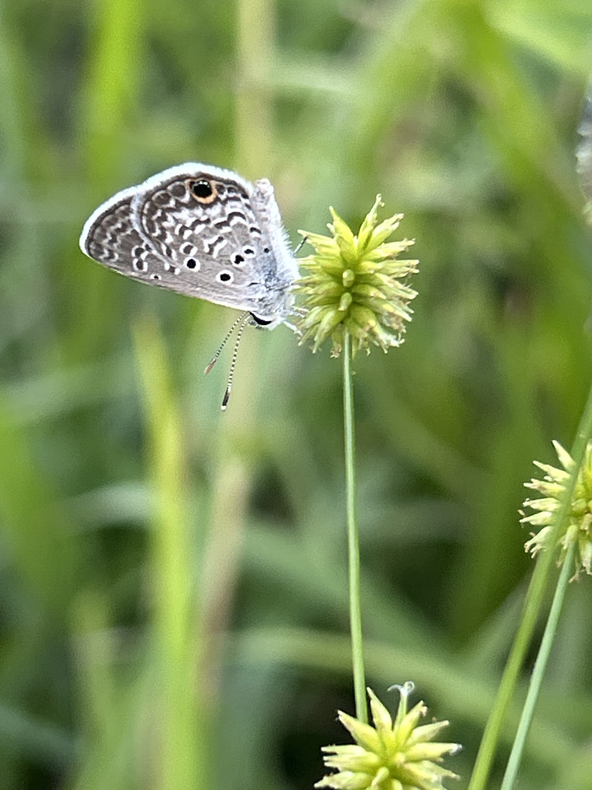
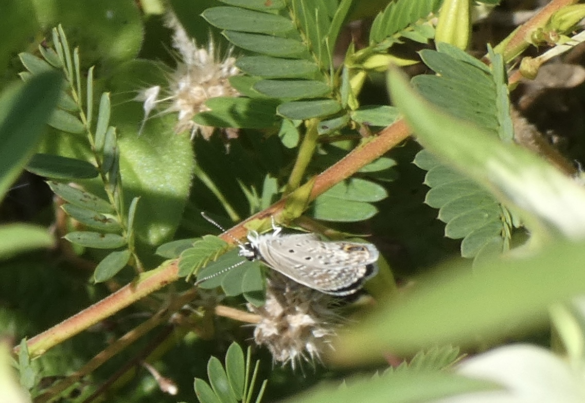
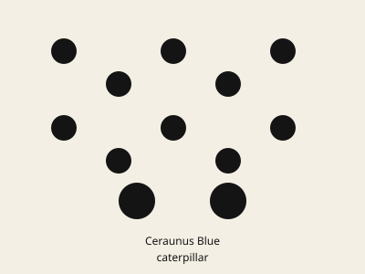

Hemiargus ceraunus
Common nowTiny blue of disturbed ground. Recorded this month. Easy to walk past.


Weedy lots, roadsides, scrub, open ground.
Partridge pea
Chamaecrista fasciculatasensitive pea
Chamaecrista nictitansCassius Blue is zebra-striped below and sits on plumbago. Ceraunus is gray-dotted with two orange-capped hindwing spots.